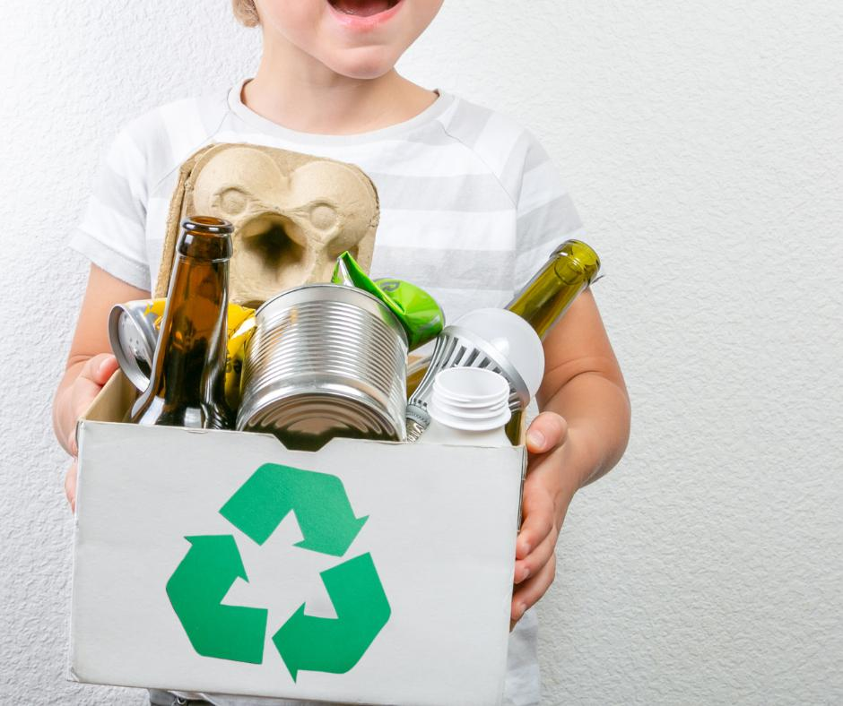

🌿
Vide un Ilgtspējība
Aprites ekonomika un atkritumu samazināšana
Aprites ekonomika ir sistēma, kurā resursi tiek pēc iespējas ilgāk izmantoti, atkārtoti pārstrādāti un radīts minimāls atkritumu daudzums.
Tā atšķiras no tradicionālās "paņem–izmanto–izmet" pieejas, jo mērķis ir slēgts materiālu cikls.

Galvenie principi:
- ♻ Samazināt – mazāk izmantot jaunus materiālus un enerģiju.
- 🔄 Atkārtoti lietot – pagarināt produktu dzīves ciklu, labojot un atjaunojot.
- 🔁 Pārstrādāt – izmantot vecus materiālus jaunu produktu ražošanā.